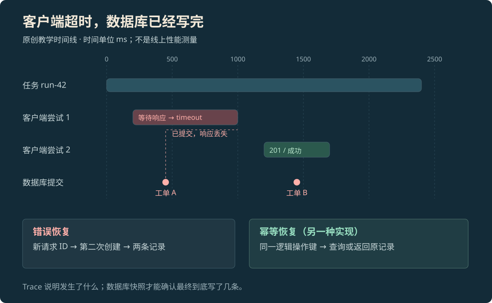

ENGINEERING CONCEPT · TRACING
Agent 可观测性：看清模型和工具怎样完成任务
用日志、统计数字和调用记录，看清 AI 做过什么、哪一步出错。解释 Trace 与 Span 怎样关联，再用重复创建工单的例子说明怎样查错和验证修复。
本页目录
为什么需要这些运行记录#
Agent 可观测性，是通过运行记录看清 AI 做了什么、哪里出了问题。除了最后的回答，还要知道它调用了哪个工具、工具有没有真正执行、数据怎样变化、哪里等得最久，以及为什么结束。多留日志有助于查错，但不能只凭两条记录就确定原因。
| 名称 | 简单说是什么 | 能帮助回答什么 |
|---|---|---|
| 日志（Logs） | 某个时刻发生的一件事 | 这次工具调用报了什么错 |
| 指标（Metrics） | 一批请求的统计数字 | 超时是否变多，费用和等待是否增加 |
| 调用记录（Traces） | 把一次任务经过的调用连起来 | 它经过哪些模型、工具和服务 |
指标适合先发现整体变化；Trace 帮忙找到某一次任务经过的步骤；日志补充具体细节。在日志里附上 Trace 和操作的编号，就能从错误回到同一次任务。每次都不同的任务编号，适合放在日志或 Trace 里；若给统计指标也按每个编号单独分类，类别会越积越多，影响统计和存储。[6]
Trace 和 Span 怎样把步骤连起来#
Trace 是把相关调用连起来的记录。Span 是其中一次有开始和结束时间的操作，例如一次模型请求、一次工具请求或一次数据库写入。同一个 Trace 里的 Span 共享 trace ID；每个 Span 还有自己的 span ID，并可记下哪个操作发起了它、发生了什么、是否报错。几件事同时进行时，它们的时间可以重叠。[1]
任务经过后台队列或稍后恢复时，记录有时会分成几个 Trace。可以用业务编号把它们找回来，也可以用 Span Link——指向另一段操作的关联。记录不必强行画成一棵完整的树，但各个编号的用途要清楚。
例如创建一张工单：run_id 表示整次 AI 任务；operation_id 表示“创建这一张工单”这件事；attempt 表示为同一件事试了第几次。重试不该变成另一件没关联的事。
{
"run_id": "run-42",
"operation_id": "create-draft-17",
"attempt": 1,
"tool": "create_ticket",
"client_status": "timeout",
"business_status": "unknown",
"started_ms": 200,
"ended_ms": 1000
}这是教学用的最小记录，不是 OpenTelemetry 的标准字段清单。client_status: timeout 表示客户端等超时了，business_status: unknown 表示事情有没有办成还不清楚。不能仅凭超时，就写成 business_status: failed。
数据库是否写入，要查服务端的操作记录、写入日志，或再次查询实际数据。步骤之间的前后关系帮助查找问题，但并不能单独证明原因。记录工具怎样分出每次尝试，也会影响看到的结构；接入时需要固定采用的字段约定和版本。[2]
调用跨到另一个服务，编号怎样跟过去#
两个服务里的记录，不会因为时间接近就自动连在一起。发送请求时，需要把当前 Trace 和 Span 的编号放进请求或消息；接收方读出编号，再为自己的操作建立关联。这叫上下文传播，这里的“上下文”指关联调用所需的信息，不是模型读到的整段提示词。
OpenTelemetry 用传播器（propagator）负责写入和读取这些编号。HTTP 请求常把它们放在 W3C traceparent 请求头中；它就像一张跟着请求走的编号条。[7]
例如 AI 运行程序 → 工具网关 → 创建服务 → 数据库，每经过一处都要保留关联。如果网关丢掉编号，前端可能只看到超时，而服务端的写入留在另一组记录里，只能再用业务编号查找。消息队列也需要传递这些信息；几个来源共同触发一件事时，可以用 Span Links 记录多个关联。
这些编号只用来关联记录，不表示授权。收到同一个 trace ID，并不等于允许写数据；服务仍要检查调用者身份和允许的范围。把记录连起来，也不能代替查询事情是否真的办成。
该记什么，怎样挑选要保留的记录#
添加记录前，先确定要记哪些操作、哪些字段，以及是否保留每一条记录。通常有用的内容包括模型版本、输入输出 token 数、工具名、重试次数、停止原因和时间。token 是模型处理文字的小块，记录数量有助于计算开销。业务是否完成，仍要查实际结果，不能只看 HTTP 返回码。[2]
对创建工单这类问题，最有用的是业务编号、尝试次数、客户端状态、服务端是否写入，以及最后有几条记录。保存整段提示词，未必有助于查清重复创建。
确有需要时保留资料引用、参数摘要，并限制谁能查看。导出前删除或遮去凭据、个人信息。OpenTelemetry 的安全文档介绍了过滤和改写敏感字段的做法。[4]用哈希把内容变成一串摘要，有时能帮助关联，但不代表一定认不出原来的人或数据。
只保留部分记录，叫采样。为了查错，可以多保留失败的任务；但若保存的 100 条里有 80 条超时，不能就说全部请求有 80% 超时，因为你可能故意留下了更多超时记录。估计总体比例时，需要知道每类记录被保留的概率，或另有覆盖全部请求的计数。
Head sampling 是在任务开始不久就决定留不留，可能漏掉后来才出错的任务。Tail sampling 是等看到更多步骤后再选，但需要等待和暂存，也找不回前面已经丢掉的记录。查错用的样本与统计整体情况的数字，要分开解释。[8]
工单重复创建的例子#
客户端请求 create_ticket 创建工单。服务端写入成功，但返回消息在途中丢了。客户端等到超时，又创建一次。第二次返回 201，表示创建成功，AI 回复“已创建工单”。用户看到一条正常回复，数据库却有两条工单。
这是教学故障，编号和毫秒数都是示例，不是线上系统的性能记录。


放大查看 ↗问题出在把“没收到结果”当成“事情没做成”。超时只说明客户端没及时拿到消息。只看第二次的 201，或者只数报错日志，都不知道数据库里最后到底有几条。
先查实际写入，再决定怎样修#
先核对两次创建是否来自同一件事、参数是否相同，再查第一次写入是否发生在超时之前。如果同一次请求留下两张工单，就需要修改超时后的处理办法，而不只是让回复写得更清楚。
| 看到的记录 | 可以知道什么 | 还不知道什么 |
|---|---|---|
| 客户端 timeout | 没有在等待时间内拿到结果 | 服务端有没有执行 |
| 服务端写入成功 | 数据已经改了 | 客户端是否收到结果 |
| 同一业务编号下有两张工单 | 确实重复创建了 | 具体该在哪一处补处理 |
| 不再直接重试后，重复消失 | 重试办法与问题有关 | 其它故障是否也处理好了 |
一种办法是使用幂等键：为同一件事带上同一个编号，让服务识别重复请求，避免重复办理。但需要确认服务真的支持它，还要检查相同编号是否必须配相同参数、编号保留多久，以及能否查询办理结果。Stripe 文档给出了一个具体实现：在其接口规定下，相同幂等键可以复用原结果；其它服务不一定有同样保证。[5]
故意丢一次响应，检查修复有没有用#
在测试环境里，安排一个明确故障：数据库刚写完，就丢掉第一次返回消息。然后照常让 AI 创建工单，看它会怎样恢复。检查直接查看数据库和调用记录，不要求它必须回复某个固定句子。这种人为制造故障来检查系统的做法，叫故障注入。
# 概念伪代码：故障注入与验收，不对应具体 SDK
env.reset(snapshot="empty-ticket-set")
env.drop_response_once(after="database_commit")
result = agent.run(task, operation_id="create-draft-17")
assert env.ticket_count(operation_id="create-draft-17") == 1
assert result.status in {"confirmed", "needs_confirmation"}
if result.status == "confirmed":
assert result.claimed_ticket_id in env.ticket_ids()
else:
assert result.claims_success is False上面是说明检查办法的伪代码，不能直接当成某个开发工具的调用方式。只允许最后留下一张工单；若已确认成功，回复里的工单编号必须真实存在；若还无法确认，就不能声称成功。
还要分别测试“请求没到服务端”“写完了但消息丢了”“再次查询也超时了”。只修好图中的一种情况，还不算处理好全部故障。Anthropic 的评测文章也建议检查完整过程、复核题目和判分器，并把发现的失败继续留在测试里。[3]
修复记录要让人看懂改了什么#
修复记录需要指向一次能重现的问题、一个具体改动，以及验证结果。比如：“创建时增加幂等键；不知道是否写入时先查询；三种响应故障都没有产生重复工单。”只写“增强可观测性”，别人看不出到底改好了什么。
修复后继续统计无法确认是否成功的请求、重复工单和恢复耗时。Trace 帮助保留过程，评测规定怎样检查。两边都能找到同一张工单，之后才能重复验证这次修改有没有持续起作用。
参考资料
论文、官方文档与案例依据。
- [1]OpenTelemetry · Traces ↗
官方概念文档；Trace、Span、调用之间怎样关联。
- [2]OpenTelemetry · Inside the LLM Call: GenAI Observability ↗
2026 年官方工程文章；Agent、模型、工具的 操作记录示例。
- [3]Anthropic · Demystifying evals for AI agents ↗
官方评测实践；读取轨迹、校准判分器与维护回归集合。
- [4]OpenTelemetry · Handling sensitive data ↗
官方安全文档；只记录必要数据，以及过滤、删除和遮去敏感内容。
- [5]Stripe · Idempotent requests ↗
官方接口文档；同一逻辑请求重试、结果复用及有效期。这里只引用幂等机制，不将其视为其他工具的默认保证。
- [6]OpenTelemetry · Observability primer ↗
官方日志、指标与 Trace 的概念说明；本页字段取舍为应用层设计。
- [7]OpenTelemetry · Context propagation ↗
官方上下文注入、提取与跨服务 Trace 关联；传播上下文不授予业务权限。
- [8]OpenTelemetry · Sampling ↗
官方 head/tail sampling 的时机与代价；排障采样不能直接作为总体失败率的分母。